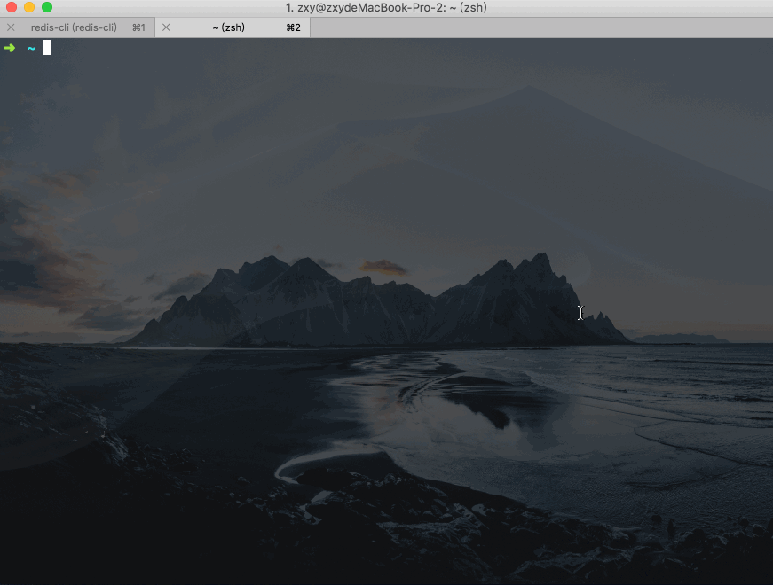

终端高效使用指南
Autojump
如果不想每次都输入 cd 再输入 ls，那么 autojump 是必装的神器：
brew install autojump
它会记住每一次 cd 的路径，并且保存在数据中，以后我们可以直接输入 j + 关键字，从而避免频繁的 cd。
终端命令自动补全
输入快捷键 Ctrl + E 可以根据当前提示快速补全，快捷键 ; 可以补全并执行

终端 Finder 模拟器：r
系统的 Finder 其实并没那么好用，最大的问题在于没法和 Shell 有效的交互，比如复制移动文件、在当前文件夹位置打开终端都很不方便。
作为程序员，我推荐使用 Ranger 来浏览文件目录，它是一个使用 Vim 键位映射的文件管理工具。
使用快捷键 r 来打开 ranger，它的完整定义是：alias r='source ranger'，这样做的好处在于当 Ranger 中目录发生变化时，可以改变外部 Shell 的路径。
在 Ranger 中，使用 j/k 来上下移动光标，h/l 来进行目录的前进和后退。
常用的操作有：
- zh：切换是否显示系统隐藏文件，按一次打开，再按一次关闭
- x：安全删除文件（放入垃圾箱中而不是 rm）
- yy：复制，dd：剪贴，pp：粘贴，空格键多选文件
- gh：进入用户目录（$HOME）
- yn：复制文件名，yd 复制文件夹名，yp 复制完整路径名
- :j：和 autojump 一样，输入要跳转的地方
- Ctrl + f：利用 fzf 搜索文件
- f：当前目录内过滤文件名
- du：查看当前目录内各文件夹大小
- oo：在 Finder 中打开，op 或回车键：使用系统默认的程序打开，oc：使用 VSCode 打开（如果已经有 VSCode 进程，为了加快速度，则使用已存在的）
- m：添加书签，um：选择要删除的书签，`````：展示书签
fzf：模糊搜索神器
fzf 是一个模糊搜索神器，^t 是特定语义下的补全快捷键，^i 是默认快捷键，很少用到：
- 输入
kill然后按下^t键，就会打开 fzf 补全界面，通过输入进程名来获取到 PID - 类似的还有输入
ssh、export、unset、unlias等命令 - 按下
alt + c可以列出当前目录下的文件夹，并快速进入 - 按下
^g，会自动补全 autojump 的路径列表 - 按下
^r进入命令历史模式，此时也会自动打开 fzf 补全界面，自动补全命令 - 注意此时的补全并不会自动执行，只会把命令粘贴到命令行中，如果想要按下回车后自动执行，可以用快捷键
^x^r来触发

fzf 甚至还支持为自定义的命令添加补全，具体做法可以参考：Examples (completion)